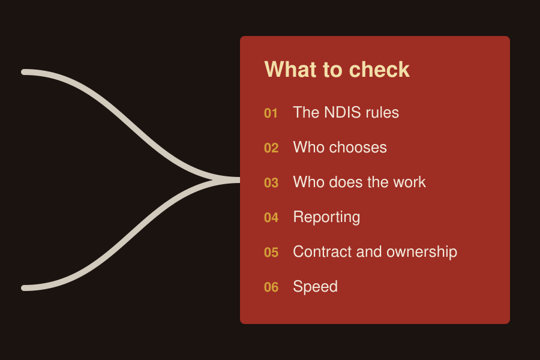
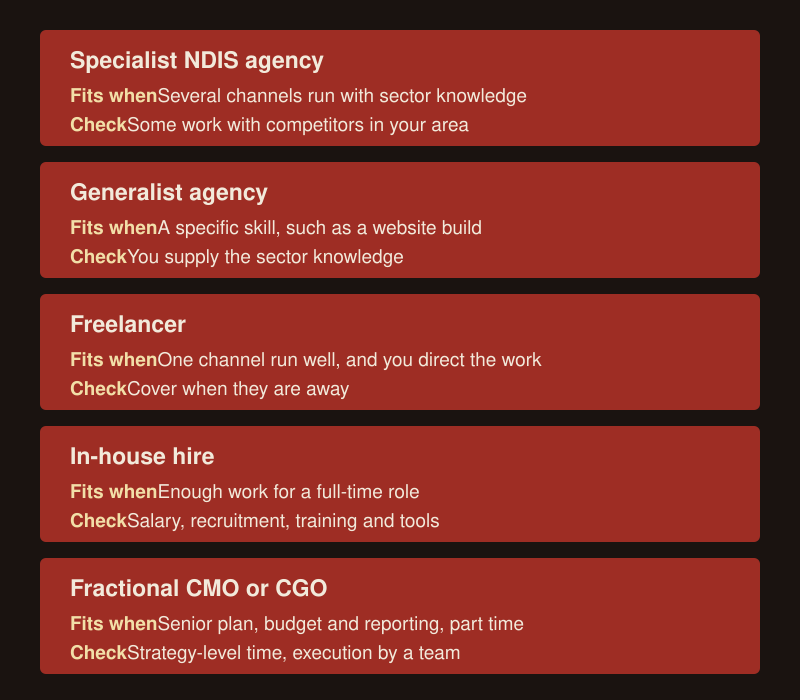
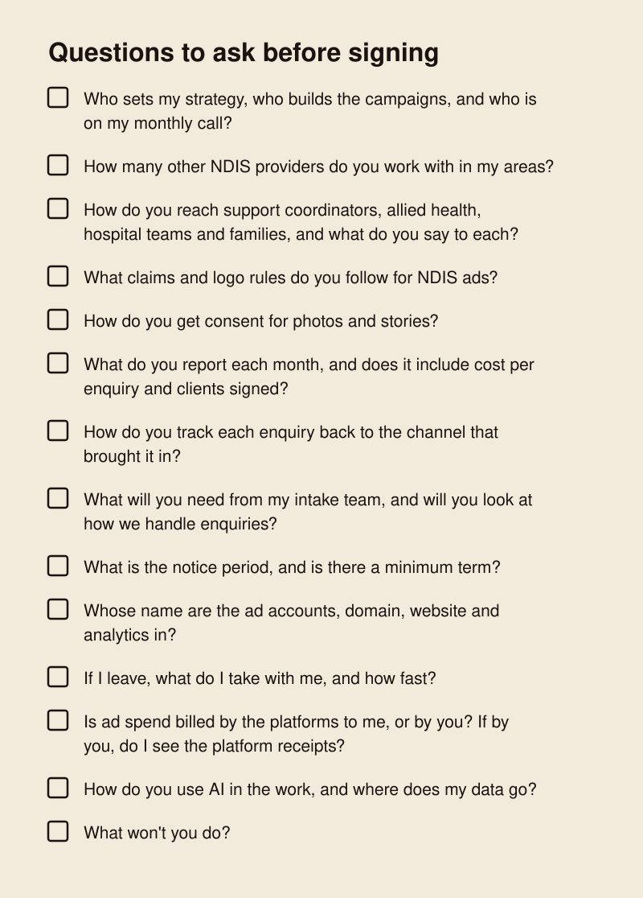
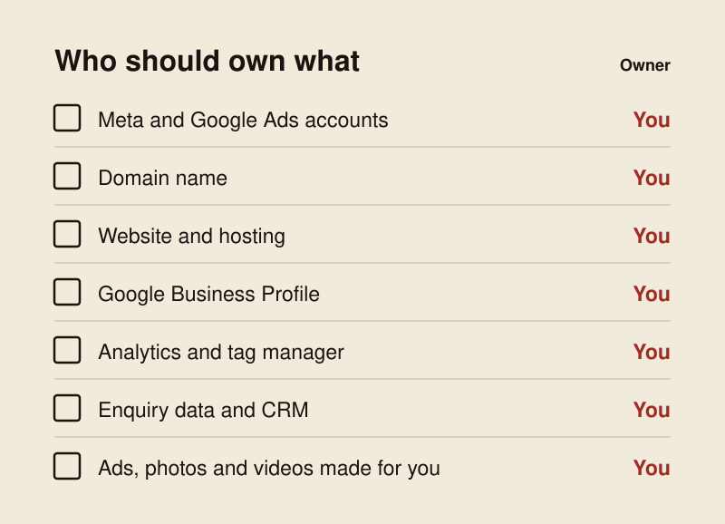
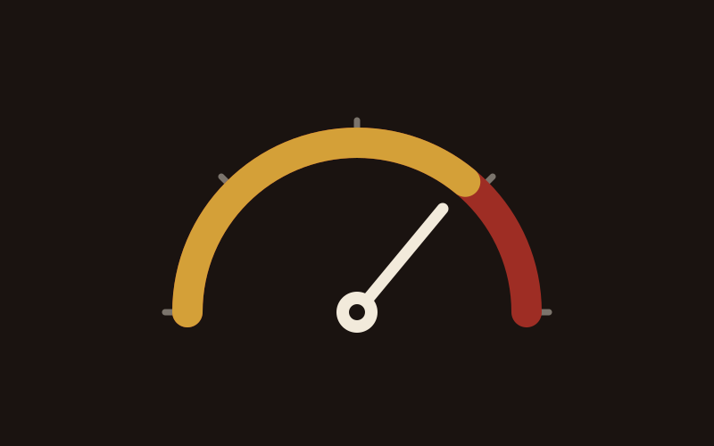
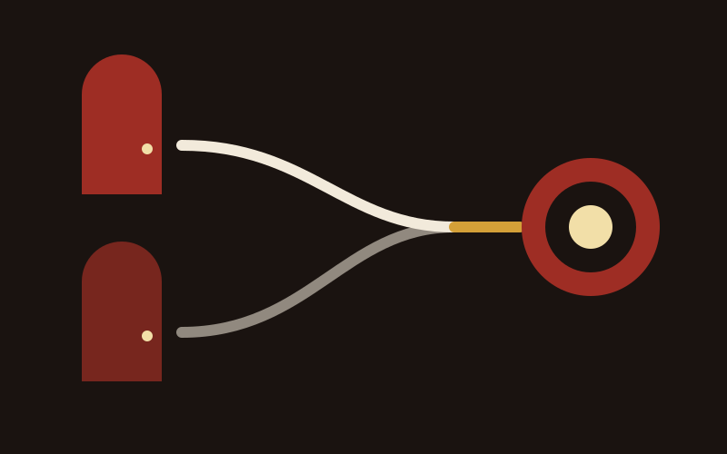
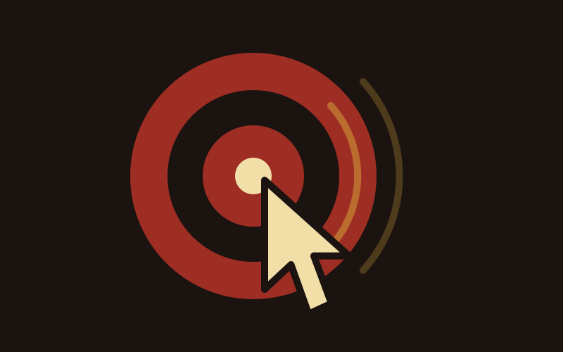

NDIS Marketing Strategy
Digital is how small and medium providers get found. Here is what belongs in the plan.
Read more

To choose an NDIS marketing agency, check six things:
The best NDIS marketing agency for you is the one that passes those checks for your services, your areas and your budget.
I run a boutique NDIS marketing agency, so read this knowing I'm one of the options. I've written it so you can run the same checks on me as on anyone else, and I've included a list of who I'm not right for.
Look for knowledge of the NDIS rules, an understanding of who uses your service and who chooses it, a named person doing the work, reporting on enquiries and clients signed, a fair contract with assets in your name, and fast replies. Here is what each one looks like in practice.
An agency writing ads for you needs to know what you can and can't say. Ask them to explain these without looking anything up:
The person who uses your service and the person who chooses it are often different people. A parent, partner or guardian may decide. So may a support coordinator, an allied health professional or a hospital team planning a discharge. Ask the agency how they would reach each of those people, and what they would say to a support coordinator compared with a family searching late at night. My post on getting NDIS clients from hospitals shows how different the hospital conversation is.
Ask about families further away too. A daughter in Melbourne may be searching for her dad's support in regional NSW.
Ask for the name of the person who sets your strategy, the person who builds your campaigns and the person on your monthly call. If those are three different people, meet all three before you sign.
Ask how they will learn your business. An ad manager who doesn't know which of your homes has a vacancy can switch off a higher-cost ad that was bringing in the best enquiries. Someone who knows your vacancy list should review your ads every week.
Reach, impressions and clicks show activity. Ask to see enquiries, cost per enquiry, and how many of those enquiries became clients. As I put it on a call this year, "CPL doesn't matter if they're not converting." CPL is cost per lead.
When I took over one provider's Google Ads, the older campaigns were bidding on search terms that showed as conversions. The provider told me those enquiries were poor. I'd rather see fewer enquiries, even at a higher cost each, if they are the right people.
In a good report, the agency also tells you what to do next. One provider CEO asked for three changes to a weekly report:
Ask any agency for that.
Look for a notice period you can live with, review points if there is a minimum term, and your ad accounts, domain, website and data in your name. I cover this in the red flags section below.
Notice how long the agency takes to answer your first enquiry. That is the service you are buying.
Then ask what they will do about your own response times. A support coordinator often goes with the first provider who calls back. More enquiries only help if your team answers them fast, so a good agency looks at your intake process too. My NDIS sales and enquiry process page covers that half.
The right option depends on how much you want done for you, how much you already know, and who in your business can direct the work. Each of the five can be the right choice.
| Option | When it fits | Trade-off | What drives the cost |
|---|---|---|---|
| Specialist NDIS marketing agency | You want several channels run with sector knowledge built in | Fewer providers to choose from, and some work with competitors in your area | Number of channels, services and areas |
| Generalist marketing agency | You need a specific skill, such as a website build or technical SEO, and you can check copy against NDIS rules yourself | You supply the sector knowledge and the compliance check | Scope of the project or retainer |
| Freelancer | You need one channel run well and can direct the work | One person's capacity, and cover when they are away | Hours or channels per month |
| In-house marketing hire | You have enough work for a full-time role and someone senior to direct them | Salary, recruitment, training and tools, and one person rarely covers every channel | Seniority of the role |
| Fractional CMO or CGO | You need someone senior to set the plan, the budget and the reporting, part time | Strategy-level time, with execution by their team, your team or both | Hours of senior time and whether execution is included |
A specialist agency fits when you want SEO, ads, social and referrals handled by people who already know the sector. You save the time it takes to teach someone the rules. Check whether they work with other providers in your areas and how they handle that, and check who runs your account day to day.
A generalist is the right choice when the job is mostly technical, or when they already know your business well. A strong web developer or SEO specialist can do excellent work for a provider. Plan to review every ad and page against the NDIS rules yourself, or have someone who knows them do it.
A freelancer suits one channel with a clear brief, such as a paid social specialist running your Meta ads. A good freelancer brings senior skill in one channel, and you deal with that person directly. Agree what happens when they are sick or on leave, and make sure every account and login sits in your name from day one.
An in-house hire makes sense when the volume of work justifies a full-time role and someone in your business can direct them. One pairing I've seen work well: an in-house marketing manager or coordinator running the day to day, with a fractional lead setting the plan and holding them to it.
A fractional Chief Marketing Officer or Chief Growth Officer sets the strategy, budget and reporting part time, and leads whoever does the work. It suits providers who have outgrown ad hoc marketing and can't justify a full-time senior hire. Ask how many hours you get, whether their team runs the channels or yours does, and whether the role covers referrals and your enquiry process as well as marketing.

Ask these before you sign. A good agency answers all of them plainly.

The red flags are a long lock-in with no review points, accounts or assets in the agency's name, and reports with no cost per enquiry. Any one of them makes it harder to leave if the work stops paying for itself.
Here is who should own what:
| Asset | Who should own it | What the agency gets |
|---|---|---|
| Meta and Google Ads accounts | You | Partner or user access |
| Domain name | You, registered to your business | Access to DNS settings if needed |
| Website and hosting | You, with your own admin login | A user login |
| Google Business Profile | You, as primary owner | Manager access |
| Analytics and tag manager | You | User access |
| Enquiry data and CRM | You | User access |
| Ads, photos and videos made for you | You, once paid for | A right to show them in their portfolio only with your consent |

You pay two things:
Keep them separate when you compare quotes.
For ad spend, I start Meta ads at $1,000 a month and Google Ads at around $30 to $50 a day on local, service-specific search terms, then review the numbers. My NDIS social media ads and NDIS Google Ads pages explain how those budgets grow.
The fee depends on:
Expect a separate quote for a website build. I quote mine separately too.
I'm a fit for NDIS and aged care providers who want one senior person setting the plan across marketing, referrals and sales, with a small specialist team running the channels. This is how I work:
You can pick one service or have me run the lot: NDIS SEO, NDIS Google Ads, NDIS Social Media Ads, Email Marketing, Social & Content, NDIS LinkedIn, NDIS Website Design, Referrals & Partnerships, Sales & Enquiry Process and Coaching & Workshops. Managed Growth is all of it, with me as your fractional Chief Growth Officer. My NDIS marketing page shows how the parts fit together.
I'm not the right choice if:
My About page has the rest of my background and the commitments I keep.
The best NDIS marketing agency is the one that passes these checks for your business: it knows the NDIS rules on claims, the logo and privacy, it names who does the work, it reports on enquiries and clients signed, it keeps your ad accounts and website in your name, and its contract has a notice period you can live with. Ask each agency on your shortlist the same questions and compare the answers.
You pay the agency's fee plus your ad spend, which goes to Google, Meta or LinkedIn. The fee depends on how many channels, services and locations are covered, setup work, who makes the creative and how much senior time you get. For ad spend, I start Meta ads at $1,000 a month and Google Ads at around $30 to $50 a day on local search terms, then review the numbers.
Hire a freelancer when you need one channel run well and you can direct the work and check it against the NDIS rules. Choose an agency when you want several channels run as one plan with sector knowledge built in. With either, keep every account and login in your name from day one.
Look for a short notice period, such as 30 days, or a minimum term with review points and an exit if agreed numbers aren't met. Avoid a 6 or 12 month lock-in with no review points.
You should. Your Meta and Google Ads accounts, domain, website, Google Business Profile, analytics and enquiry data should sit in your business's name, with the agency given access. If the agency pays the platforms and bills you, ask for the platform receipts each month.
Yes, when you need senior direction on strategy, budget and reporting but can't justify a full-time hire. A fractional CMO or Chief Growth Officer leads the plan part time, and their team, your team or both do the work. Ask how many hours you get and whether referrals and your enquiry process are covered.

Digital is how small and medium providers get found. Here is what belongs in the plan.
Read more

How to find NDIS clients through referrals, Google, AI search, social media, ads, email and a fast enquiry process. Every channel, in one 2026 guide.
Read more

Reaching participants takes more than showing up. How Google Ads connects you with people actively searching for your services, from keyword selection to measuring what works.
Read more
Book a free growth audit and I'll show you where your enquiries come from now, what your current marketing is costing per enquiry, and the first three things I'd change. Use this checklist on me in the same call.